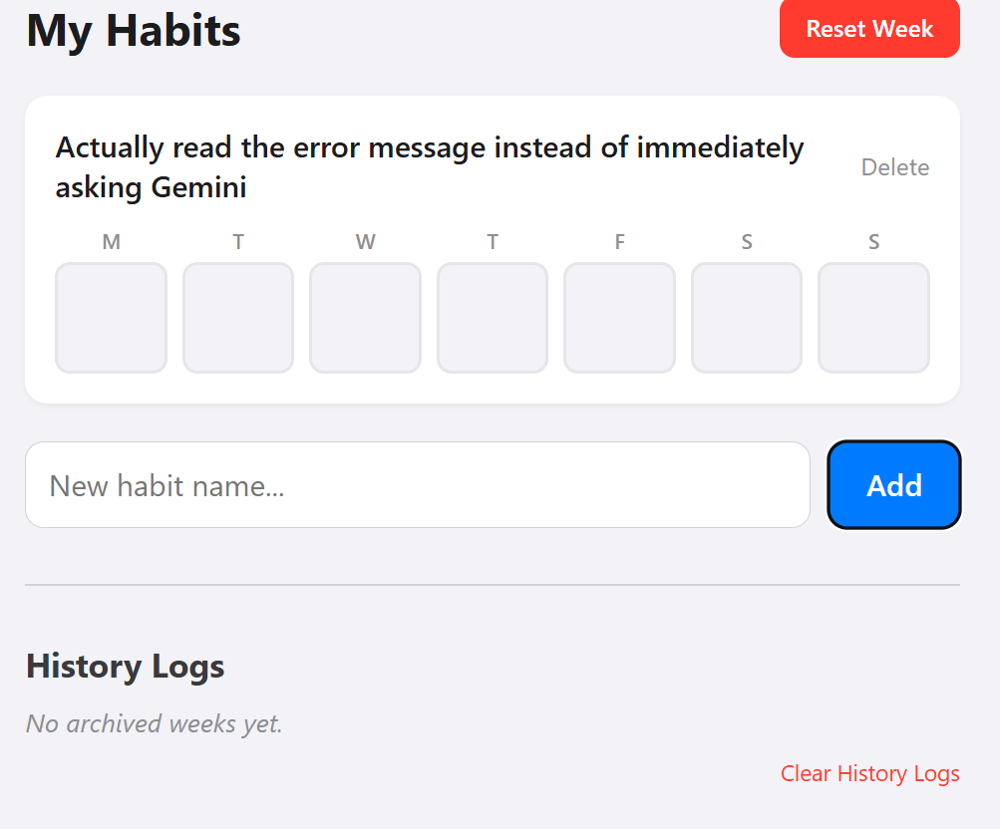
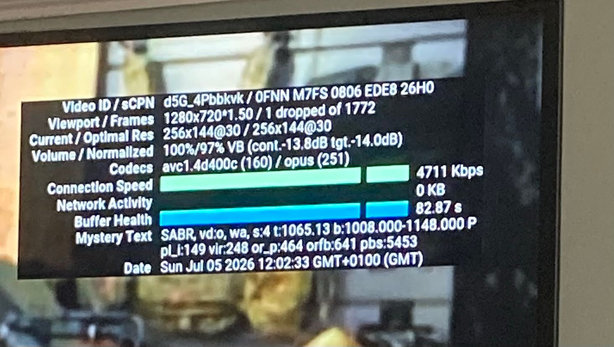
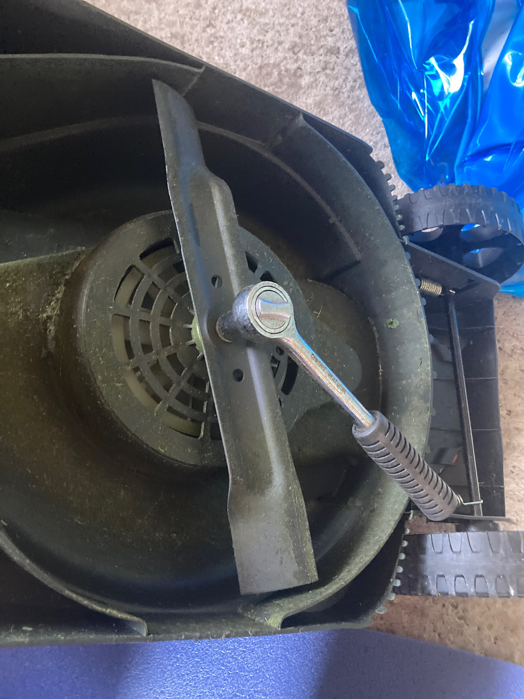
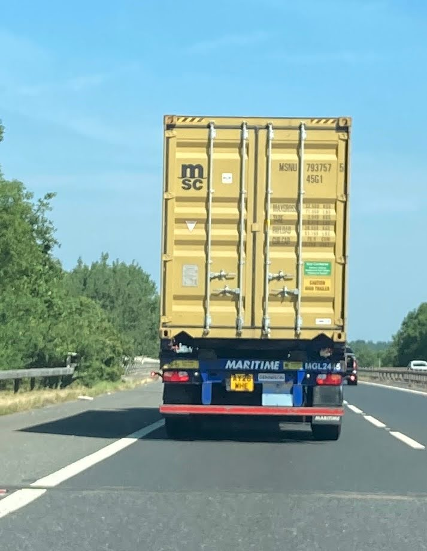
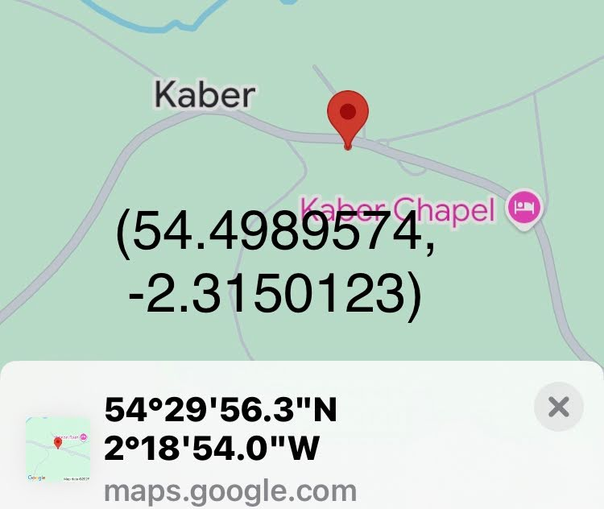
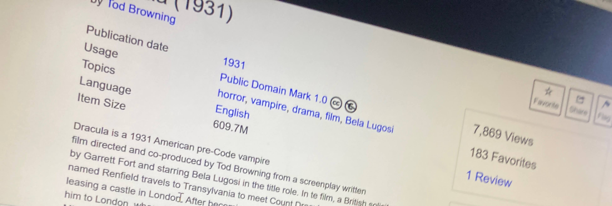
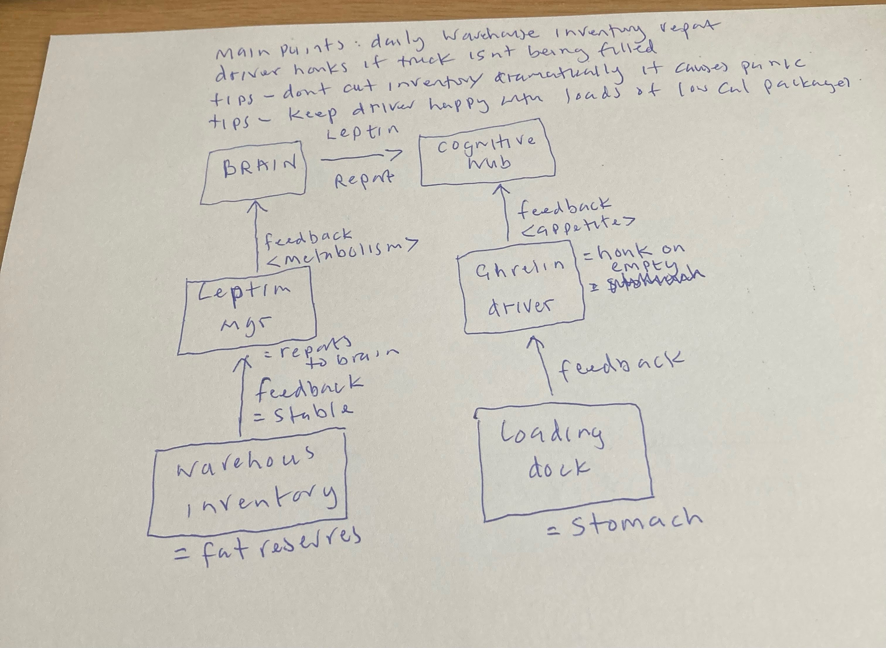
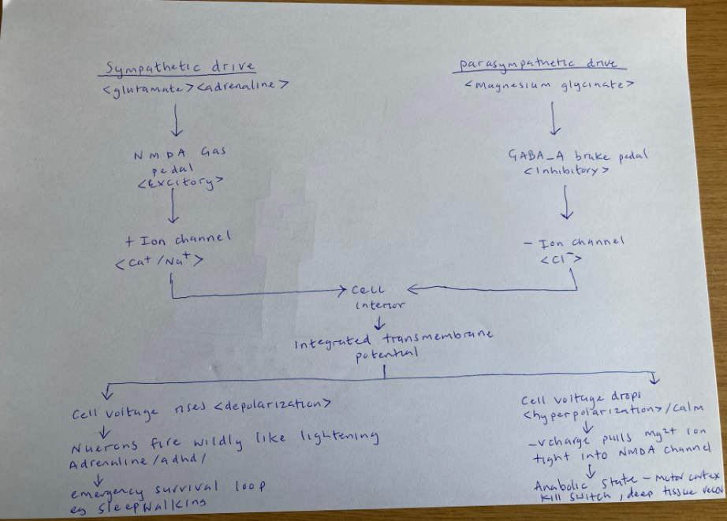
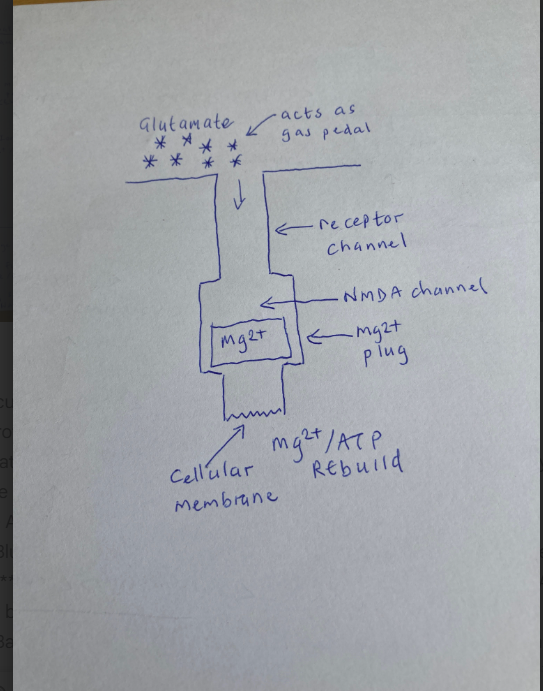
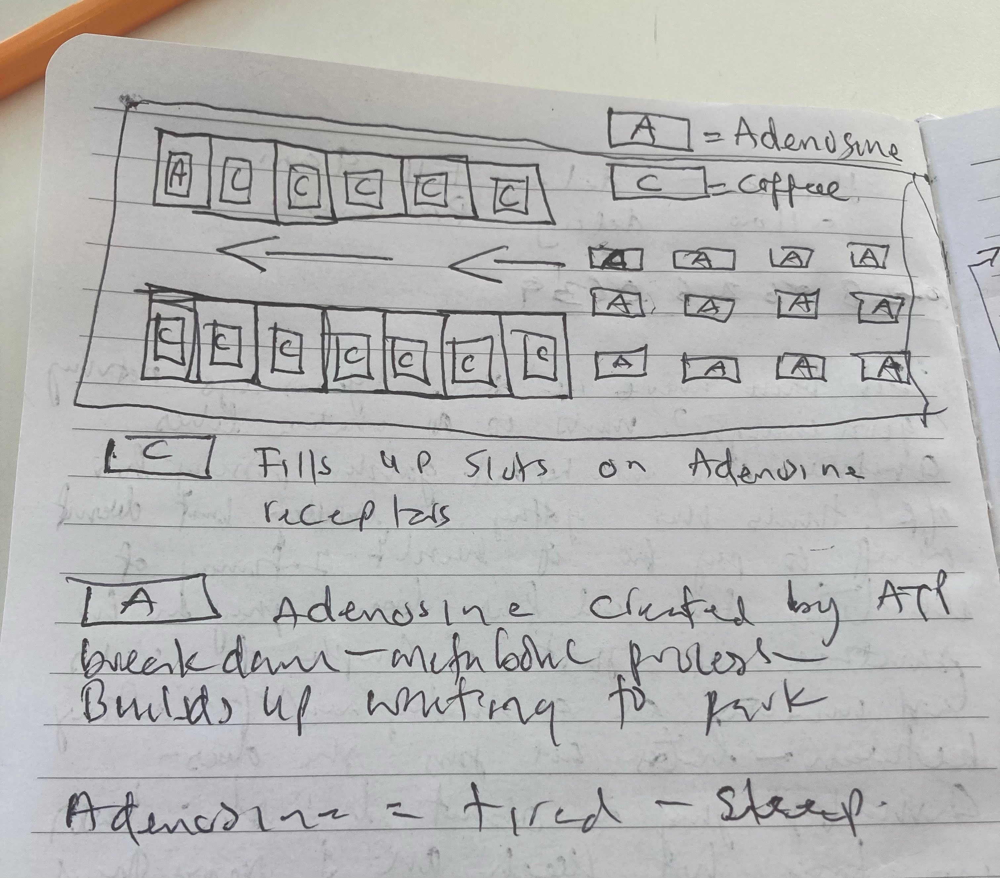

About
Thoughts on...
Thoughts on...
contact: pauldor2026@gmail.com
....You're wrong>You're doing it wrong>There's spelling errors>You haven't left spaces>The Div box is crap 170720261607.

Parenting , business, blogging, coding, meditating, being social, job. It does not matter what you do or how you do it....somebody will always tell you ...you're doing it wrong. As long as you know why you do it and aren't hurting another anybody else....it's all gucci to me.
I write to solve problems, think with my fingers, to read back continously and update my priors and maybe leave a chaotic wiki of my brain and Life for my kids. It's not for anybody else. Have a strong of self is always advice I give myself. I like the Howard Roarke quote when asked about how others might see him. "I don't think about it" - was the retort. Why would I edit anything. I've little interest in aesthtics. I love solutions and functionality. I love Tom Sachs and his views on leaving the glue on repairs and using what is around you. He calls it "Bricolage: Making Do". I love this idea. To ne its beautiful. A collection of letter that are mispelt but we all know what it means. I don't need to appear intelligent - I already know what my level is. More and more I find imperfection just.....perfect. I can see typos in every sentence and I don't want to go back and fix it.
....Circadian Light Pathway Summary 160720261910.
Early Morning Light and the Circadian Pathway
1. The Retinohypothalamic-SCN Pathway
• Photons to Signals: Early morning natural sunlight contains a high density of blue-spectrum light. When these photons enter the eye, they strike specialized photoreceptors called intrinsically photosensitive retinal ganglion cells (ipRGCs).
• The Master Clock: These cells contain the photopigment melanopsin and project directly to the suprachiasmatic nucleus (SCN), the master circadian pacemaker located in the hypothalamus.
2. Biological Effects
• Cortisol & Melatonin: The activation of the SCN triggers a systemic cortisol release (promoting alertness and raising body temperature) while actively suppressing the production of melatonin from the pineal gland.
• The 14-Hour Sleep Timer: This morning light exposure anchors your circadian rhythm, setting an internal timer that dictates when melatonin will begin secreting again roughly 14 to 16 hours later, optimizing sleep architecture.
3. Practical Implementation
• Direct Exposure: View natural outdoor light for 5–10 minutes on clear days (or 15–30 minutes on overcast days) within the first hour of waking.
• Avoid Barriers: Window glass filters out critical blue light wavelengths and reduces lux intensity by up to 90%, making outdoor exposure significantly more effective than looking through a window.
Voltage: The master clock in your brain (the Suprachiasmatic Nucleus, or SCN) runs a literal 24-hour electrical cycle. During the day, your clock neurons depolarize (increase voltage/charge) and fire action potentials continuously; at night, they hyperpolarize (drop voltage) and go silent.
Quantum Physics: The light-sensing proteins in your eyes and cells (specifically cryptochromes) rely on quantum coherence and spin chemistry to detect blue light and even the Earth's magnetic field. This quantum state translates a single incoming photon into the biochemical signals that reset your clock genes.
Brain reads this electrical high-voltage state as "daytime."
The electrical state of the cell membrane directly tells the DNA what time it is.
This is way more complicated than I imagined and has scope for a lot more rabbit holing!
quantum mechanics handles the input signal (detecting light to reset the clock).
How does the human organism sense light ? It does this using specialized photoreceptors in the retina, including proteins called cryptochromes. Cryptochromes do not operate on simple classical chemistry; they are the poster child for the emerging field of quantum biology.
Together, they form a perfect closed-loop system: the quantum mechanics of atomic spin tell the body when the day begins, and the cell membrane voltage coordinates the physical work of actually living it.
actions: field of quantum biology / cryptochromes / quantum coherence / lux intensity
....hosting native apps on an iphone 150720261016

This was a bit of a pain to get around Apple's Os security protocol of preventing code being executed locally. Tried a few things and then used github to host and open in Safari. Neat solution. Idea was to prove concept that I can host my own applications locally offline. Started the office tracker - see image.
Zero Network Dependency: The application operates entirely client-side. The HTML structure, CSS layout rules, and JavaScript logic engine are stored in the device's secure sandboxed memory after the initial Safari load.
Persistent Web App (PWA) Properties: Utilizing Apple WebKit meta tags, the app launches inside an isolated fullscreen wrapper directly from the iOS Home Screen, bypassing browser search bars.
Data Schema & Storage Architecture
The system parses and serializes state changes into JSON strings, writing them to two distinct partitions in the browser's synchronous key-value storage (`localStorage`):
1. Active Board (`offline_habits`): Manages current-week data in a 7-element boolean array.
2. Historical Vault (`offline_habits_archive`): Holds a deep-copy list of objects containing the habit name, date range, historical checkmarks, and a calculated completion score.
Operational Workflow
State Updates: When a checkbox is toggled, JavaScript mutates the active array in memory, re-renders the UI grid, and commits the updated state to storage.
Archiving Logic: Clicking "Reset Week" triggers a deep copy of the active array. It appends the snapshot alongside a formatted date stamp and performance score (e.g., `5/7`) to the archive vault before re-initializing the active week arrays to `false`.
Core Code Logic & Snippets
The Local Database (`localStorage`)
The state is kept in sync by reading and writing to the browser's key-value store using JSON serialization.
```
// Load data on startup
let habits = JSON.parse(localStorage.getItem('offline_habits')) || [];
let archive = JSON.parse(localStorage.getItem('offline_habits_archive')) || [];
// Save state to storage
function saveState() {
localStorage.setItem('offline_habits', JSON.stringify(habits));
localStorage.setItem('offline_habits_archive', JSON.stringify(archive));
}
```
Toggling Days
A single change in state updates both the local array and triggers a complete screen re-render.
```
function toggleDay(habitIndex, dayIndex) {
// Invert boolean state
habits[habitIndex].history[dayIndex] = !habits[habitIndex].history[dayIndex];
saveState();
render();
}
```
The Option B Archiving Engine
On resetting, active states are deep-copied into the archive array with metadata before the active checklist is cleared.
```
function archiveAndResetWeek() {
const todayStr = new Date().toLocaleDateString('en-GB');
habits.forEach(habit => {
const totalChecked = habit.history.filter(Boolean).length;
// Push snapshot to archive
archive.push({
name: habit.name,
dateRange: todayStr,
history: [...habit.history], // Deep copy array
score: `${totalChecked}/7`
});
// Reset active tracking array
habit.history = [false, false, false, false, false, false, false];
});
saveState();
render();
}
```
....Youtube stats for nerds 140720261253
There is something perversly satisfying about having nerd statsonscreen with a ultra low res of 144. YouTube Stats for Nerds Summary
Based on image.png:
Dropped Frames: 1 dropped out of 1772 (very smooth playback).
Resolution: Running at a low 256x144 resolution.
Connection Speed: Stable at 4711 Kbps.
Buffer Health: Excellent at 82.87 seconds pre-loaded.
Codecs: AVC1 (video) and Opus (audio).
To turn off: Go to the gear icon (Settings) on the video player and toggle "Stats for Nerds" off.

....Sharpening a mower blade 130720250941
Lawnmower Blade Maintenance Summary
1. Cleaning & Assessment
• Initial State: The blade had a thick layer of grass crust obscuring the edge.
• Action: Cleaned the blade surface thoroughly.
• Inspection: Revealed the factory bevel and identified small nicks/rough patches at the cutting tip from normal use.

2. Sharpening Process
• Tool Used: Axe stone lubricated with GT85 (with PTFE).
• Method: Kept the blade stationary and applied the stone at a 30-degree angle, matching the factory slant.
• Technique: Worked in overlapping circular motions from the inside toward the tip on both ends until a bright, shiny strip of steel was exposed.
• De-burring: Flushed the flat underside with the stone to snap off the metal lip.
• Protection: Finished with a protective spray of GT85 to prevent rust and grass adhesion.
3. Reinstallation & Safety
• Tightness: Clamped the blade firmly to the motor shaft until it was locked completely solid.
• Motor Resistance: Confirmed it is normal for the blade to be stiff and difficult to turn by hand when powered off due to the motor's internal resistance.
• Pre-flight Checks: Verified there is no wobble, the blade does not scrape the plastic deck, and all tools/wooden blocks have been removed.
....Understanding nomenclature on shipping container 130720260948.
Shipping Container Identification & Weights
Container Identification:
• Owner: Mediterranean Shipping Company (MSC).

• Tracking Code: `MSNU 793757 5` (Unique international BIC code used for global tracking).
• Size Type: `45G1` (40 feet long, High-Cube at 9'6" tall, featuring passive ventilation).
Weight Specifications:
• MAX. GROSS: 32,500 KGS / 71,650 LBS (Absolute maximum legal weight of the container plus cargo).
• TARE: 3,940 KGS / 8,690 LBS (Weight of the empty container itself).
• PAYLOAD: 28,560 KGS / 62,960 LBS (Maximum weight of the actual cargo allowed inside).
• CU. CAP.: 76.4 CUM / 2,700 CU.FT. (Total internal volume capacity).
Content & Destination Tracking:
• Anonymity: Containers do not display contents or destinations externally to protect against theft and piracy.
• Tracking: Customs and logistics providers look up cargo manifests and Bills of Lading via the unique Container Number (`MSNU 793757`).
• Exceptions: External markers are only used for specialized setups, such as hazardous materials (Hazmat placards) or refrigerated cargo (white Reefer containers).
....The Painted veil 140720261511.
I despise Kitty Fane. Does that make it good writing? Maybe? I'm not really enjoying it but want to know how it ends. 14072026 - Kitty has been woken in the dead of the night and taken to see a dying Walter. He didn't want her to see him dying is Waddington's explanation. For this I despair of Walter - he's such a pussy and it irritates me that after everything he stills clings to this silly upper class stiff upper lips and wanting to be the perfect 'English gentleman'. So why am I still reading? I had such a guttoral response to Kitty's behaviour at the start I want to see if she get s a good dose of Karma.
The Irony of his Last Words: Walters famous last words (quoting Oliver Goldsmith's Elegy on the Death of a Mad Dog) are the ultimate self-indictment:
"The dog it was that died."
In the poem, a mad dog bites a man, and everyone expects the man to die—but instead, the dog dies. Walter realized too late that his own toxic, biting malice and obsession with revenge are what actually killed him, while Kitty (the supposedly weak one) survived.
Kitty represents the superficial, "finished" young woman of her social class. She was educated to play the piano, dress well, and engage in mindless small talk to secure a husband.
They are both terribly sad shallow examples of second handers - they are both living for others instead of being rational and self interested actors with a 'juice' for life. I wish I'd never started this book. It's depressing.
....Weather 130720260932.

original research
Decoding Global Coordinates (DMS Format)
Geographic coordinates written in DMS (Degrees, Minutes, Seconds) format function as a high-precision global address by breaking down grid lines into units of time.
Latitude: 40° 42' 46" N
Indicates the precise position North or South of the Equator (horizontal grid lines).
• 40° (Degrees): Represents 40 major grid lines north of the Equator. One degree spans approximately 69 miles.
• 42' (Minutes): Each degree is divided into 60 smaller segments called minutes. This indicates 42 segments past the 40th parallel.
• 46" (Seconds): Each minute is further divided into 60 smaller units called seconds. This represents 46 steps past minute 42, narrowing accuracy down to a few meters (roughly a car length).
• N (North): Confirms placement in the Northern Hemisphere.
Longitude: 74° 00' 21" W
Indicates the precise position East or West of the Prime Meridian in Greenwich, England (vertical grid lines).
• 74° (Degrees): Represents 74 major vertical lines west of the Prime Meridian.
• 00' (Minutes): Indicates a position resting directly on the main 74-degree line with no additional minute increments.
• 21" (Seconds): Represents 21 precise tracking units past the 74-degree line.
• W (West): Confirms placement in the Western Hemisphere.
Geographic Example
The specific coordinate combination of 40° 42' 46" N, 74° 00' 21" W pinpoints the main entrance of the New York Public Library in Manhattan, New York City.
Transition from DMS to Decimal Degrees (DD)
In modern computing, Decimal Degrees (DD) have largely replaced the traditional Degrees, Minutes, Seconds (DMS) format. While aviation and maritime navigation still utilize DMS, GPS systems, databases, and weather APIs rely almost exclusively on DD due to its computing efficiency.
Comparison Example (Warrington, UK)
• Decimal Degrees (DD): `53.3591831, -2.5054001`
• Degrees, Minutes, Seconds (DMS): `53° 21' 33.1" N, 2° 30' 19.4" W`
Key Reasons for Software Adoption
1. Simplified Parsing for Code
Processing traditional symbols (`°`, `'`, `"`) requires string manipulation, which slows down execution. Decimal degrees represent locations as standard floating-point numbers that software can process instantly.
2. Directional Mapping via Signs
Instead of using cardinal direction letters (N, S, E, W), Decimal Degrees utilize positive and negative signs to define hemispheres:
• North & East: Represented by positive numbers ($+$).
• South & West: Represented by negative numbers ($-$).
3. Scalable Digital Precision
Traditional DMS requires adding decimals to seconds to achieve sub-meter precision. Decimal Degrees handle precision strictly through the number of trailing decimal places:
• 4 decimal places: Accurate to roughly 11 meters.
• 7 decimal places: Accurate to approximately 1 centimeter, allowing commercial GPS hardware to map highly granular positions.
Building a DIY Weather Station
A homebrew weather station combines hardware sensors, a micro-computer, protective physical housing, and local programming.
1. Hardware Sensor Components
• Micro-computer: A Raspberry Pi or Arduino serves as the processing core.
• Environmental Sensors: Common chips like the BME280 measure temperature, humidity, and atmospheric pressure.
• Mechanical Sensors: Anemometers calculate wind speed, and tipping-bucket assemblies measure rainfall volume.
2. Physical Housing (Stevenson Screen)
Sensors require protection from direct sunlight and rain while remaining exposed to ambient air.
• Design: Built by stacking white plastic bowls or saucers upside down with uniform spacers.
• Function: The gaps allow continuous airflow for accurate ambient measurements, while the white material reflects radiant solar heat.
3. Data Collection Software
A local script handles data ingestion from the hardware pins.
• Operation: Reads sensor voltages, converts values to standard units, and logs data to a local file (e.g., `backyard_weather.log`).
• Integration: The logged files can be queried by local command-line applications to display hyper-local backyard metrics alongside public API data.
Weather forecasting is a complex scientific process that relies on data collection, physics-based computer models, and human meteorologists. The entire operation can be broken down into three main phases: observation, simulation, and communication.
## 1. Global Observation (Collecting the Data)
Before computers can predict the future weather, they must know exactly what the atmosphere is doing right now. Data is continuously gathered from around the planet using several methods:
* **Surface Weather Stations:** Thousands of automated stations on land and buoys at sea measure temperature, pressure, humidity, wind speed, and precipitation.
* **Weather Balloons (Radiosondes):** Launched twice a day from nearly 900 locations globally, these balloons climb up to 100,000 feet into the atmosphere, measuring vertical profiles of pressure, temperature, and moisture.
* **Weather Satellites:** Geostationary and polar-orbiting satellites track cloud coverage, ocean temperatures, and water vapor from space.
* **Doppler Radar:** Ground-based radar networks track the movement, intensity, and type of precipitation (rain, snow, or hail) in real time.
## 2. Numerical Weather Prediction (The Simulation)
Once the raw data is collected, it goes through a process called **Data Assimilation**. Because observations cannot cover every single square inch of the planet, supercomputers use mathematical models to fill in the gaps and create a perfectly uniform snapshot of the global atmosphere.
This snapshot is plugged into **Numerical Weather Prediction (NWP)** models. These are massive computer programs containing complex fluid dynamics and thermodynamic equations.
* **The Grid System:** The supercomputer divides the atmosphere into a massive 3D grid of boxes, wrapping around the globe and stacking many layers high into space.
* **Solving Equations:** The computer calculates how air, heat, and moisture will move from one grid box to its neighboring boxes over time, using fundamental laws of physics.
* **Ensemble Forecasting:** Because small errors in initial data can cause completely different outcomes days later (the Butterfly Effect), supercomputers run the same model dozens of times with slightly altered starting data. If 45 out of 50 runs show rain on Thursday, meteorologists can confidently forecast a 90% chance of rain.
## 3. Human Interpretation and Communication
Computers generate the raw numbers, but raw model data can conflict or contain systemic biases.
Professional meteorologists review multiple global models (such as the American **GFS** or the European **ECMWF**). They use their localized knowledge of geography—such as how a specific mountain range or coastline alters wind patterns—to tweak the results, finalize the forecast, and distribute clear warnings to the public.
make sure when filing on an iphone it is set to "most compatible" so that it records in H.264 rather than HEVC . Otherwise it will need converting to MP4 or MPEG4 to play on a Sony TV . Understand that the file format system for the usb pen drive will most likely be FAT32 or EXFAT32 and will need to be EXFAT32 for anything over 4BG file size which most modern 4k films will be. There is an extensive archive and content that has no copyright on at Archive.org and i DLd Dracula for this lab. The original screen format is box due to the 1931 production and needed remote>tools(row 8)>screen size to configure.

original research
Here is a detailed summary of our entire conversation, tracking how you went from a project idea to playing a classic film on your TV today.
## 1. The Original Idea: The Mini Media Server
You started with an idea to build a super small, slim, low-power media server on your shelf running free software to play your own locally held films and programs.
* **The Blueprint:** We discussed using a budget **Intel N100 Mini PC** (which costs around £130–£150, uses only 6 watts of power, and smoothly processes 4K video streams) paired with an external hard drive for storage.
* **The Software:** The recommended setup was a free Linux base (**Ubuntu Server**) running **Jellyfin** (a 100% free, open-source media manager that looks like Netflix).
## 2. The Phone Streaming Attempt & Troubleshooting
When you mentioned wanting to play your own short movies, we pivoted to seeing if you could stream them directly from your iPhone to your home TV for free without building a server yet. We hit a few roadblocks, which we solved step-by-step:
* **Roadblock 1 (Mobile Data):** Your first attempt failed because your iPhone was connected to **giffgaff 4G** instead of your home Wi-Fi. We fixed this by turning on your phone's Wi-Fi.
* **Roadblock 2 (Device Incompatibility):** Even on Wi-Fi, your phone couldn't find the TV. Your photos revealed you were trying to beam the signal to a **NOW TV box** (which uses Roku software) connected to a **Sony TV (Model KDL-43WF663)**.
* **The Culprit:** Neither the NOW TV box nor that specific Sony model supports Apple AirPlay natively. Third-party casting apps on the App Store tried to charge you money or trick you into a subscription, which you rightly rejected.
## 3. The Practical Solution: The USB Stick Route
To bypass Apple and Sony's compatibility locks completely for free, we turned to the physical USB ports on your TV.
* **Checking the USB Stick:** You checked your **HP v135w (E:)** drive properties on your Windows PC. It was formatted to **FAT32**—which is perfectly readable by your Sony TV.
* **Managing the Storage:** The stick was an 8GB drive with only **1.43 GB of free space** left. We discussed the **4GB file limit** rule of FAT32 (meaning no single movie file can be larger than 4GB) and noted that 1.43 GB was tight but enough for a test.
## 4. Success with *Dracula* (1931)
You went onto **Archive.org** (a massive, legal public domain digital library) and found the classic movie *Dracula* (1931) starring Bela Lugosi.
* The file was **609.7 MB**, making it small enough to fit perfectly into your remaining 1.43 GB of space without hitting the 4GB FAT32 limit.
* You downloaded it as an **MP4 / H.264** file, transferred it to your HP stick, plugged it into the Sony TV's USB port, and opened the TV's native **Media Player** app to watch it.
## 5. Technical Knowledge: File Systems & Formatting
Finally, we covered how USB sticks actually organize data behind the scenes:
* **The Three Main Formats:**
* **FAT32:** Universally compatible with almost all devices, but capped at a maximum single-file size of 4GB. Usually found on new sticks 32GB or smaller.
* **exFAT:** The modern standard for flash drives. It removes the 4GB limit, holds massive files, and works perfectly on Windows, Mac, and modern Smart TVs. Usually comes pre-formatted on new sticks 64GB or larger.
* **NTFS:** Windows' default internal system. It is great for PCs, but Macs can't write to it, and many Smart TVs flat-out refuse to read it.
* **How to Format on Windows:** If you ever need to wipe a stick and change its format (e.g., changing a new stick to exFAT to hold a huge movie file), you right-click the drive in Windows File Explorer, select **Format**, choose your file system, and click **Start** (which erases the drive clean).
....update 140720261236.
**H.264** (also known as **AVC**, or Advanced Video Coding) is essentially the universal language of digital video.
It is a **video codec**—which is short for **co**mpressor/**dec**ompressor.
Whenever you shoot a video on your phone, the raw file is massive. If your phone saved it without compressing it, a 10-second clip would fill up your storage. H.264 is the mathematical formula that shrinks that giant video file down into a tiny, manageable size without ruining how good it looks.
### Codec vs. Container (The "Box" Analogy)
To understand why your iPhone says "H.264" but the file ends in .mov or .mp4, it helps to use the **gift box analogy**:
[Image explaining video codec and container concept]
* **The Codec (H.264):** This is the actual *content* of your gift (the video itself). It's the specific way the video data is folded and packed tightly so it fits in a small space.
* **The Container (.mp4 or .mov):** This is the *wrapping paper and box* you put the gift in.
Because your iPhone compressed the video using the **H.264** codec, it doesn't really matter if the "box" is labeled .mov (Apple's favorite wrapping paper) or .mp4 (the world's favorite wrapping paper). The actual video inside is identical. That is why you can simply rename the file extension, and it still works!
### Why is H.264 so famous?
H.264 was released in 2003 and quickly became the absolute gold standard for the internet.
* **Universal Compatibility:** Literally everything plays it. Your smart TV, an old Windows XP computer, a PlayStation, a cheap tablet, and even smart refrigerators can decode H.264.
* **Great Efficiency:** It was the technology that made HD streaming on YouTube and Netflix possible back in the day, because it could stream high-quality video over standard internet connections.
*Note: There is a newer version called **H.265 (HEVC)** which compresses files even smaller, but older TVs often can't play it—which is why changing your iPhone settings to "Most Compatible" (H.264) was the right move!*
At its core, H.264 video compression works by exploiting a simple truth: **video is just a sequence of still images, and most of those images look almost identical to the ones right next to them.** If your phone recorded 30 individual, uncompressed photos every second, your storage would fill up in minutes. To prevent this, H.264 uses two main types of mathematical "trickery" to shrink the file size by up to 99% without your eyes noticing.
## 1. Spatial Compression (Within a Single Frame)
Also known as **Intra-frame compression**, this trick looks at a single picture frame and simplifies it, much like how a JPEG photo works.
If you take a video of a person standing in front of a solid blue wall, H.264 doesn't save the color data for every single one of the millions of blue pixels. Instead, it divides the image into a grid of blocks (called **macroblocks**) and writes a shorthand note: *"This entire block of 16x16 pixels is this exact shade of blue."* ---
## 2. Temporal Compression (Between Multiple Frames)
This is where the real magic of H.264 happens. Also known as **Inter-frame compression**, this process looks at what changes *over time*.
Imagine a video of a person talking in a room. The background wall, the couch, and the floor do not move at all. The only things moving are the person's mouth and eyes. H.264 realizes it is a waste of data to redraw the couch 30 times every second.
To solve this, H.264 uses three types of frames:
* **I-Frames (Intra-coded Frames):** These are "keyframe" anchor points. They are fully detailed, complete images saved every couple of seconds.
* **P-Frames (Predicted Frames):** These frames do not contain a full picture. Instead, they look back at the previous I-Frame and **only** record what has changed (like a hand moving).
* **B-Frames (Bi-directional Predicted Frames):** These are the most compressed. They look both *backward* at previous frames and *forward* at upcoming frames to calculate and estimate movement, saving only the tiny mathematical differences.
By using P and B frames, H.264 only has to save about 10% to 20% of the actual image data for the majority of your video.
## 3. Motion Estimation (Tracking the Movement)
When something moves across the screen (like a car driving by), H.264 doesn't delete the car and redraw it in a new position in the next frame.
Instead, it uses **vector tracking**. It recognizes the block of pixels that makes up the car, and in the next frame, it simply writes a tiny mathematical instruction: *"Take that exact block of pixels from the last frame and shift it 5 pixels to the left."* Moving a block of existing pixels requires infinitely less data than drawing a brand-new car in every frame.
....Launch Jupyter 010720261310
from cmd launch a Jupyter.
use jupyter command to see what further commands are available
>>jupyter
JupyterLab installed. for running .ipynb files.
>>jupyter lab
http://localhost:8888 launches in web browser.
terminal starts a local webserver by starting a kernel (server) to display folders as webpages
localhost means this pc this IP address locally.
8888 is the apartment address in the apartment block (local host).
it will launch a second at address : http://localhost:8889.
it will security handshake using a secure token : http://localhost:8888/?token=xyz.
this ensures anyone on the local network cant see it.
when you open a port the potential exists for someone else to use that open port (apartment door) but the token means there is a guard with a pw standing guard and you can't enter without it.
updated 040720261017 : Jupyter automatically generates a unique, one-time Security Token (a long string of random letters and numbers) every single time you launch the server. This token acts as a cryptographic password. If you manually open a completely different browser tab or a private window and just type http://localhost:8080, you won't get straight to your files. Instead, you'll be stopped by a gray screen asking for a Password or Token.To get past this screen, you have to find the terminal window where Jupyter is running, copy the long string of text after token=, paste it into the box, and click log in. Once you do this, Jupyter drops a small file called a cookie into your browser cache so it remembers your browser and doesn't ask you again for that session. this is to be done as a lab session added to keep note . i can see all session tokens using : >>jupyter notebook list
....Hunger 040720260917.
Protein and Hunger Hormones.
ghrelin ("Empty" Light): Produced in the stomach when empty; signals the brain to seek food. Levels drop once food is consumed.this is the driver honking the horn in my flow_chart.
leptin ("Full" Gauge): produced by fat cells; signals long-term energy reserves. Dropping levels during dieting trigger increased appetite and a slower metabolism. this is the email to corp hq in my flow chart which is a report on warehouse inventory.
the Protein Advantage: protein effectively suppresses ghrelin and stimulates leptin, increasing satiety and helping maintain a caloric deficit naturally.
the Carb Effect: Carbohydrates cause temporary water retention (via glycogen storage) which can mask weight loss on the scale, and they offer lower satiety than protein.
i can trick the lepton manager by reducing slowly the input raw materials so i start to empty inventory. i can keep the driver from honking the horn by keeping him loaded with low cal food such as fibre and fluids and protein which is a thermic effect . really need to write about gluconeogenesis.

....GABA seesaw 030720261150.
1. The Autonomous Seesaw: Glutamate vs. GABA
The Blueprint: Your central nervous system operates on a chemical seesaw between Glutamate (the excitatory neurological gas pedal) and GABA(the inhibitory braking system).
The Baseline: Due to your neurodevelopmental background, your brain naturally over-produces glutamate, keeping your neurons firing rapidly. Historically, this caused internal static, childhood bedwetting, insomnia, and lifelong sleepwalking (caused by an incomplete motor kill-switch transition during slow-wave sleep).
The Magnesium Intervention: Shifting your Magnesium Malate to 5:00 PM (with dinner/tea) and Magnesium Glycinate to 9:00 PM (with your protein shake) successfully balanced the seesaw. Magnesium acts as an NMDA receptor antagonist (blocking excess glutamate) and a GABA agonist (engaging the brakes), facilitating deep, unmedicated nocturnal repair and cellular ATP replication.
2. Chronobiological Caffeine Deployment
The Cortisol Window: Because you wake at 4:48 AM "raring to go," your body produces a potent, natural cortisol spike to drive alertness. Introducing heavy caffeine during this window creates fast stimulant tolerance and subsequent afternoon adrenaline crashes.
The 60-Minute Focus Ramps:
06:30 AM (The Creative Anchor): Consuming a medium PG Tips Black Tea provides a low stimulant load (~45mg caffeine) paired with high levels of L-Theanine. L-Theanine crosses the blood-brain barrier to stimulate alpha brain waves, creating a state of "relaxed alertness" perfect for your reading and writing block without triggering hyperactivity.
08:00 AM (The First Peak): Delaying your first full McDonald's White Coffee (~120mg caffeine) until your natural cortisol tapers allows the stimulant to maximize executive function right before your 08:30 AM Ignition Breakfast (2–3 eggs + B-complex).
12:30 PM (The Afternoon Bridge): Your second White Coffee lands precisely at the half-life of the first, smoothly clearing the afternoon slump and fully exiting your system by 9:30 PM to protect sleep architecture.
3. The B-Vitamin Diagnostic Footprint
The Historic Crash: Your previous adverse, manic reactions to B-complex supplements were caused by a severe magnesium deficiency bottleneck. B vitamins heavily accelerate the methylation cycle (synthesizing dopamine and adrenaline) and demand magnesium to convert into active energy (Mg\text{-}ATP).
The Resolution: Forcing this premium fuel into cells lacking a mineral baseline slammed the glutamate accelerator down with zero GABA brakes, causing systemic over-excitation. Because your evening magnesium syntax now pre-saturates your cells, your morning **08:30 AM Ignition protocol can safely utilize the B-complex to set a clean cognitive baseline.
4. The 80/20 Rule of the Protocol
To maintain this elite trajectory without psychological fatigue, ruthlessly prioritize the Vital 20%:
1. Training Volume: Hit the 1–3 RIR (Repetitions in Reserve) Optimal Zone** on your working sets to trigger the mTOR pathway. Ignore hyper-complex tempos; controlled ~1s eccentrics are sufficient.
2. Nutrient Syntax: Keep magnesium restricted to the evening (5:00 PM Malate with dinner; 9:00 PM Glycinate with protein) to allow daytime neural drive while maximizing overnight mitochondrial repair.
3. Caffeine Windows: Keep 6:30 AM light (PG Tips black tea) and deploy your two primary white coffees at 8:00 AM and 12:30 PM.
You have transitioned your biology from a decades-long state of chronic sympathetic survival into a highly optimized, calculated anabolic loop.


....Hypertrophy 010720261218
When we boil it down to the absolute fundamentals, muscle growth relies on three foundational pillars: Mechanical Tension, Proximity to Failure, and Systemic Homeostasis.
The primary mechanism for hypertrophy is mechanical tension.
it begins at the mechanoreceptors of the muscle cell membrane (the sarcolemma)
what are mechanoreceptors?
these are tiny receptors that under tension create an electrical signal
what is the sarcolemma?
is the cell membrane of the muscle cell
the cell is cylindrical and contains lots of myofibrils that are responsible for contraction
it is uniquely equipped to carry electrical signals to the T-tubules to cause muscle contraction
once this signal is initiated downstream it triggers the mTORC1 (mammalian target of rapamycin complex 1) pathway. This is the master switch for muscle protein synthesis
maximize tension, you must control the eccentric (lowering) phase to exploit stretch-mediated hypertrophy, and you must stabilize your skeleton so the target muscle experiences 100% of the mechanical load.
focus on lowering the weight under control
motor units are recruited in size order from smallest to largest
most growth comes from large, type II glycolytic muscle fibers but they won't recruit unless they have too.
aim for 1-3 reps prior to all fibres failing to perserve the central nervous system
carrying extra muscle mass is a luxury that the body cant really afford and is not needed
muscle contraction requires ATP - supply adequate ammounts of electrolytes such as magnesium to fund ATP
....walking. 240620261314
Most days I walk at 6.00am around a truck stop.
Each lap takes about 15 mins. There is lots going on during the walk.
It is a major truck stop for the m6.
I imagine they think I am a truck driver. At the end of the walk today I observed a curiosity.
Two lads in a car speeding on the adjacent carpark.
like 40mph speeding at approx 7am?
I wasn't annoyed like the guy they nearly crashed into, that they then had to drive past, as he charged his Tesla.
Boy was he pissed off , as he practically tried to stop them like superman.
Just curious about the lack of self awareness.
I could not fathom a reason nor how i could find myself in the decsion loop.
update 250620261000 : Anonymity is one idea i came up with. I looked into it and there is a theory caled deindividuation theory -
when we can't be identied we lose self awareness and empathy for others. Sounds like X lol. Funny what people test but experiments have been
done with this. they did a horn honkiung experiment to test speed and frequency of honking based on how identifiable the person was.
The other idea I had was perhaps it's to do with sensation seeking. I have had the experience myself of driving faster depending on the type
and volume of music i have on. Marvin Zuckerman in the 1960s pioneered the sciecne of sensation seeking. Turns out some folk have totally
different brains than the rest of use and have a higher density of dopamine receptors than average and require higher levels of stimulation.

Update 290620261143.it will need to be documented that due to the article on #coffee i changed this to walking before coffee. i have plans to Increase
he number of steps. but essentially it will always involve coffee - walking - reading -writing.
....html images. 250620261058
it has been a long time since i had to write in markup. basic syntax :"<img src="lymmservicesarialviewimage.png" alt="arial view of service station i walk around" style ="width: 30%; margin-top: 20px;">
wrapping code markup enables me to trick the browser into not running an image. the '&'lt = less than and '&'gt = greater than.
it presented red which confused initially until i realied i had styled code with a colour. which should have been obvious.
img element tags are self closing. i used aspect ratio to avoid lag for the user to reserve the required space.
....The spark 290620261118
"If we were stranded in a typical place in the universe, we would die almost immediately.
But that is because we do not yet know how to live there. A typical cube of space the size of our solar system
contains about a million tonnes of matter, mostly hydrogen. With the right knowledge,
one could transmute that hydrogen into all the elements one needed to build a space station,
and then one could live there, and thrive, and build a civilization." David Deutsch
Two things :
My life has always been immeasurably changed by knowledge examples include research on hypertrophy, coffee, touring Europe(see article),
fixing a floating shelf and tools(see article)
The other point is that Life without matter is dull AF. it struck me the first time i read that quote that being irritated by matter on earth makes absolutely no sense when you consider the alternative of sitting in that cube . suddenly everything became interesting (see rat article on death) and my curiosity (research opportunity) shot through the roof.
Knowledge is the lever I use to bend reality (software)
Matter is the hardware (the lego bricks).
"We all fish, better teach your folk / Give him money to eat, the next week he's broke." - jay z.
....Html internal linking 290620261055
Go down each heading and routinely give it an id="x" inside the h3
h3 id="x"
create the link using a href="#x"
this needs to go before the words you want to link from
then close off the word using /a
a href="#html">knowledge
internal example:
or if external:
href="external website page" target = "_blank" rel ="noopener">David Deutsch
"If you liked this, you can jump over to my article about a href="#quantum-physics">David Deutsch's theories.
.....Alt + z 010720261147
how to snap all paragraph text to the viewable windown in VS?
use Alt + z to instantly have it snap
….Coffee 290620260742
Every morning I drive to McDonald’s- walk - read - write - think and have a large white coffee. I m curious about caffeine. What it does ? Where it comes from?
Caffeine as produced my McDonald’s comes from the arabica bean produced in Asia . Picked from coffee cherries - large red flowers - then roasted . McDonald’s doesn’t roast as high as Starbucks hence Gue different taste and caffeine content .
There’s about 100mg ina large white and safe levels for humans are 300 mg per day. This is where it got interesting for me . Caffeine has a similar molecular shape to adenosine. It can occupy parking slots on the adenosine receptors that prevent actual adenosine from parking . The consequences of this are why we are all addicted to coffee.
Adenosine is responsible for making humans sleepy and tired. Sleeping metabolises the adenosine and frees up parking spaces . Meaning we awake gain. Cortisol empties the parking lot in the morning and as cortisol falls in the day the process repeats and adenosine fills the a spaces again. The adenosine is a by product of the breakdown of the cellular energy unit ATP.
Interestingly for me due to a sick parent having lupus the pharmaceutical drug methotrexate came up as caffeine acts in a similar but less targeted way . By blocking adenosine parking slots in specific organs such as kidneys and skin.
The take away for me was that caffeine can be used strategically if times correctly . Waiting a few hours on waking for cortisol to do it’s job of clearing the spaces and then block the adenosine with caffeine molecules keeps you alert and focussed . The half life means of you take another 100mg three hours later you potentially delay adenosine reaching the car park lot until mid afternoon.
The adenosine is building up in the background so when slots became available you get a wave of adenosine hitting the receptor. Potentially causing a crash of tiredness.

About
start 230620261234 : This is a personal lab - to explore ideas and situations through writing.
It's not meant to be advice and I may change my views in the future.
updated 250620261039 : The syntax of dates and times on the site is daymonthyeartime
updated 290620261123 : This may well outlive me and echo throughout time. my kids and grandkids might read this.
I may add a timeline of events to help construct a clear image of what has influenced my life - but is that a security issue?
i noticed some time ago that most of my issues evaporate when i am curious and creating. Its a subtle process to write for myself and
preventing part of my brain writing for someone else. I enjoy deep work that lacks context shifting. It seems to fire my neurochemistry
that makes my days feel fulfilling and well spent. i connect and relate well to people that are intensely curious about the world around them.
I am intrigued and slighly repulsed by people that 1. Have no curiosity 2. Aren't problem solvers and prefer destruction. I have a written well
thought value system that can be boiled down to a traders mentality. value for value. in my business years i used Felix dennis as an unoffical
mentor - whom i met a few times at poety recitals. he once said -"If I had my time again, knowing what I know today, I would dedicate myself
to making just enough to live comfortably... as quickly as I could. Riches aren't particularly worthwhile in themselves... Whoever dies
with the most toys doesn't win." this is my experience. this website is my implementation of that realisation. i still get young bucks
asking me how to make money. they are asking the wrong person sincerly. I dont have the bandwidth or patience to explain my thoughts.
Go read 'Felix Dennis' how to get rich. Find out for yourself. I live like a comfy vagabond but i have created time to be curious - build and
write for mysef.
....What I'm doing now
Updated: 290620261154
This is my now page.
Currently focusing on.
Reading: Painted Veil by W.Somerset.Muagham.
Writing: mostly by hand in a private journal to improve my character and parenting.
Creating: this blog, sql scripts, webscrapers, sql databases for own dats such as banks and garmin. diy projects - learning about tools and buying new tools.
Teaching: my youngest gcse maths aka maths club.
Exploring: planning a trip around Europe this year 2026.
Data analysis of the UK energy sector. Mainly the smart roll out.
Back to Top ↑